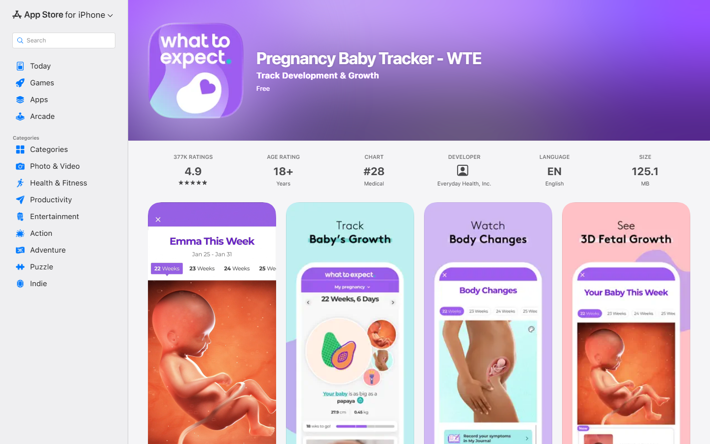
What to Expect · 콘텐츠·추적4.9점, 약 37.3만 평점. 임신·아기 성장 정보와 추적은 강하다. FlowMe는 이 전문 영역과 경쟁하지 않는다.
육아 앱을 만드는 것이 아니다. 제작자의 육아 경험 한 건을 가족이 바로 실행할 수 있는 결과물로 바꾸는 6주 제작·배포와 30일 후속 관찰안이다.
발견과 추천은 콘텐츠 플랫폼에, 알림과 저장은 기존 도구에 맡긴다. FlowMe는 ‘내 상황에 맞는가’부터 ‘실행 가능한 결과물’까지 책임진다.
근거: 현재 저장소 재집계와 사용자 여정 검증. 파일럿 수치는 의사결정용 가설이며 성과 예측이 아니다.
초기 시장은 카테고리가 아니라 반복 가능한 한 장면으로 정의해야 한다.
대상 가설 2~7세 자녀의 보호자가 놀이·외출·만들기 콘텐츠를 골라 3분 안에 준비하고 공동 양육자에게 넘기는 장면이다.
전략 판단 기존 제품 원칙 문서의 ‘내보내기 우선’ 원칙과 국내 육아 정보 이용·커뮤니티 근거를 연결한 결론.
‘좋아 보인다’가 ‘토요일 오전 10시에 누가 무엇을 준비한다’로 바뀌지 않으면 행동은 시작되지 않는다.
94개 연구, 8,000명 이상을 종합한 2006년 메타분석. FlowMe의 직접 성과 수치가 아니라 제품 설계 근거다.
언제 할지, 무엇을 준비할지, 누가 맡을지, 상황이 다르면 어디서 갈라질지, 어디까지 하면 끝인지. 이 다섯 항목이 없는 콘텐츠는 Flow가 아니라 참고 목록이다.
출처: Gollwitzer & Sheeran, 2006. 제품 적용은 FlowMe의 전략적 추론.
저장·수정·캘린더·완료 흐름은 내부 자동 검증에서 작동했다. 그러나 593개 중 공개 대표로 유지할 콘텐츠는 44개뿐이고, 관찰 사용자 증거는 0명이다.
 진입은 단순해졌다URL·메모가 같은 실행 루프로 들어간다.
진입은 단순해졌다URL·메모가 같은 실행 루프로 들어간다.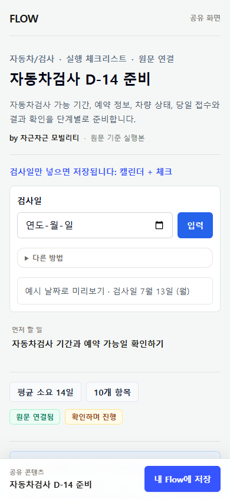
결과물 미리보기는 있다출처와 체크리스트가 보이지만 제작자·상황 적합성이 약하다.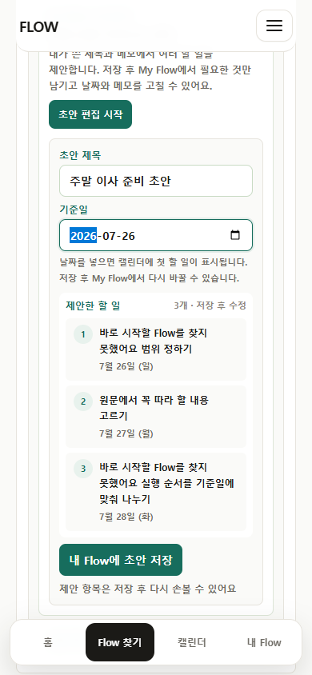
일반 초안은 차별화가 약하다검토된 경험보다 AI 목록처럼 보일 위험이 있다.근거: 현재 사용자 여정 검증, 2026-07-14 콘텐츠 재집계. 검증 기준 코드에서 단위 테스트 476/476, 전체 흐름 테스트 259/259, 화면 24장을 확인했다. 현재 작업 중 코드가 같은 상태라고 주장하지 않는다.
처음부터 계획 관리 도구가 되지 않는다. 행동을 시작할 수 있는 상태를 만들고 사용자의 기존 도구로 넘긴다.
| 단계 | 사용자 질문 | FlowMe의 책임 | 현재 부족 | 외부에 맡길 일 | 시점 |
|---|---|---|---|---|---|
| 발견 | 나와 관련 있나? | 원본·제작자·대상 상황을 즉시 표시 | 제작자 책임과 상황 문장이 약함 | YouTube·블로그·카페 추천과 검색 | P0 |
| 내 상황 판단 | 우리 가족에게 맞나? | 연령·지역·예산·선행조건·제외조건 확인 | 일반 요약과 단계 목록에 치우침 | AI의 질문 정리·개인화 제안 | P0 |
| 결과물 확인 | 누가 무엇을 준비하나? | 일정·준비물·역할·완료 기준 미리보기 | 콘텐츠별 기본 결과물이 일관되지 않음 | 없음 · 초기 핵심 책임 | P0 |
| 외부 도구 이동 | 내 도구에 들어가나? | 캘린더 파일·체크리스트·문서·표 | 목적지별 완성도와 공유가 더 좁아져야 함 | 캘린더·할 일·메모·표 도구 보관 | P0 |
| 실행·수정 | 바뀌면 어떻게 고치나? | 원본 버전과 개인 수정본 관계 | My Flow는 있으나 사용자 증거 없음 | 알림·현장 실행·개인 기록 | P1 |
| 재사용·개선 | 다음에는 더 좋아지나? | 업데이트와 동의한 집계 신호 | 제작자 통계·기여 제안·검토 권한 부재 | 민감한 개인 기록은 비공개 | P1-2 |
저장소 제품 원칙 문서의 ‘행동 결과물 변환’과 ‘내보내기 우선’ 원칙을 사용자 여정으로 재배치.
교육 과정뿐 아니라 여행·육아·요리·이사·행정을 담으려면 순서, 분기, 역할, 결과물이 함께 있어야 한다.
전략 판단 기존 출처·버전·신뢰 원장과 내보내기 전략을 제작자 원본·사용자 수정본·커뮤니티 수정 제안 관계로 확장한 계약.
FlowMe가 “AI보다 계획을 잘 만든다”만 주장하면 오래가지 못한다. 제작자 승인·버전·목적지 품질·사용 신호가 남아야 한다.
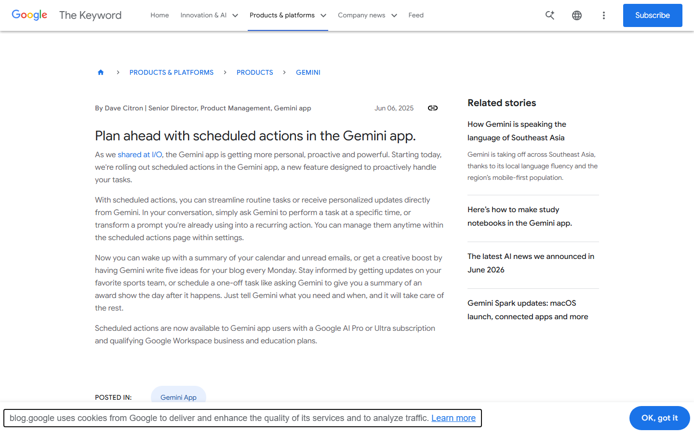
출처: Google Gemini scheduled actions, OpenAI deep research, Claude Projects. 기능 비교이며 모델 품질 실험은 아님.
같은 질문으로 모델을 직접 시험한 결과가 아니라, 공식 기능 문서에 기반한 비교다. 다음 검증에서 확인할 차이를 정의하는 용도다.
| 상황 | 범용 AI가 바로 할 수 있는 일 | 남는 실패 지점 | FlowMe 목표 상태 | 핵심 자산 |
|---|---|---|---|---|
| 주말 체험·외출 | 일정·준비물 초안 | 연령·날씨·예약·이동 분기와 원본 책임 | 제작자 승인본 + 가족 역할 + 대체안 + 공유 | 제작자·분기·버전 |
| 가족 생일 행사 | 당일까지 계획과 구매 목록 | 예산·인원·공간 변화와 담당자 인계 | 캘린더·체크리스트·역할표를 한 번에 내보냄 | 결과물·역할 인계 |
| 첫 등원 준비 | 일반 준비물 목록 | 기관·지역·학기마다 다른 최신 공식 정보 | 기관 원문과 검토일이 있는 공식 출처 기준본 | 출처·검토일 |
| 집 놀이·만들기 | 재료와 순서 생성 | 제작자 노하우·연령 적합성·실패 대안 | 원본 영상과 기준 단계, 직접 해본 보완 | 제작자·수정 제안 |
| 가족 여행 준비 | 일정·짐 목록·예산표 | 예약 상태·가족 역할·업데이트 관계 | 도구별 결과물과 개인 수정본·업데이트 | 내보내기·수정본 |
| 식사·생활 습관 | 반복 루틴과 레시피 | 알레르기·영양·연령 위험과 중단 조건 | 안전 잠금과 검토된 저위험 범위만 제공 | 위험·검토 잠금 |
문서 기반 비교 실제 AI 출력 품질·사용자 선호는 다음 검증에서 측정해야 한다.
다만 출생아 수만으로 큰 시장을 주장할 수 없다. 이번 선택은 행동 구조와 제작자 공급 가설에 근거한다.
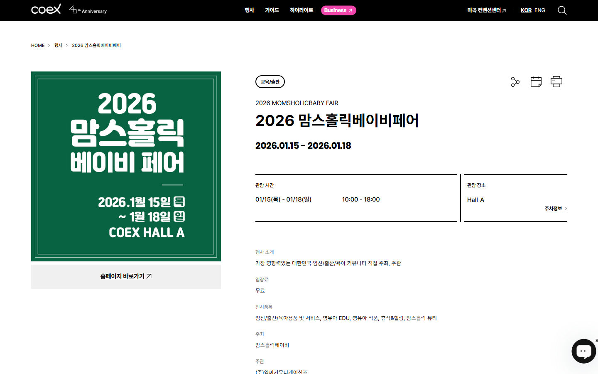
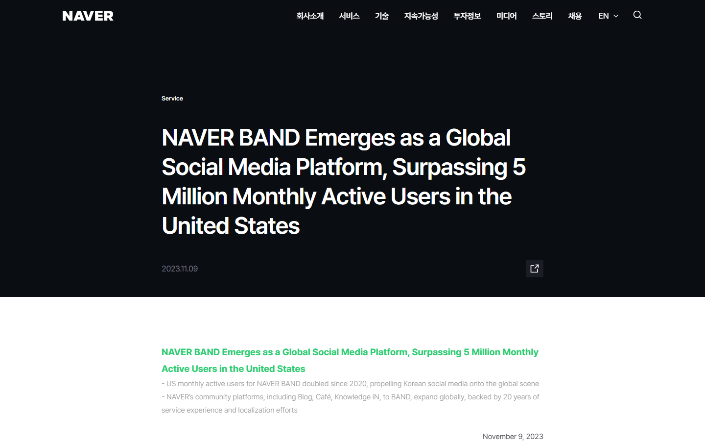
출처: 육아정책연구소, 2019, n=1,476, 국내 양육 커뮤니티 연구, 2024, COEX 2026, NAVER BAND 2023. 2025년 출생아 254,500명(+6.8%)은 시장 성장 근거로 쓰지 않았다.
이 점수는 시장 크기가 아니라 초기 행동 장면과 공급 생태계에 맞춰 새로 가중한 전략 가설이다. 이전 생태계 보고서의 점수와 직접 비교하지 않는다.
판정 · 육아가 보편적으로 우월한 것이 아니다. 저위험 ‘생활 운영’으로 범위를 잠그고 제작자·분야 확장성을 우선할 때만 조건부 1순위다.
그래서 필요한 것 · 6주 파일럿은 육아의 우승을 증명하는 실험이 아니라, 이 조건이 실제 공급과 행동 전환으로 이어지는지 확인하는 단계다.
점수 상세·두 가중치 계산·항목별 근거와 한계: 별도 근거 원장 JSON. 실제 전환율이나 수익 자료가 아니며 파일럿 선택용이다.
주말 경험은 반복성과 제작자 공급이 좋다. 가족 생일·행사는 빈도는 낮지만 현재 저장소 준비도가 높아 즉시 품질 검증에 쓸 수 있다.
| 육아 세부 상황 | 점수 | 판정 | 왜 이 순서인가 | 대표 결과물 |
|---|---|---|---|---|
| 주말 체험·외출·집 놀이 | 85 | P0 진입 | 놀이·여행·요리·만들기 제작자 원본과 준비·예약·날씨·역할 분기를 한 번에 검증 | 일정 + 준비물 + 공유 |
| 가족 생일·행사 | 83 | 즉시 검증 | 저장소에 가족 생일 Flow가 있어 현재 결과물 기준의 빈틈을 바로 확인 가능 | 날짜별 일정 + 역할표 |
| 식사·생활 습관 | 80 | P1 검토 | 반복·상품 전환은 좋지만 알레르기·영양·연령 적합성 검토 필요 | 루틴 + 식단표 |
| 어린이집·학교 준비 | 77 | 공식 기준본 | 체크리스트는 강하지만 기관·지역별 차이와 제작자 수익 동기가 약함 | 공식 체크리스트 |
| 수면·건강·발달 | 69 | P2 보류 | 의료·발달 위험과 전문 앱 경쟁이 커서 초기 범위와 맞지 않음 | 초기 제공 안 함 |
| 가족 일정 전체 관리 | 69 | 범위 제외 | Cozi·캘린더·할 일 도구와 직접 경쟁하게 됨 | 기존 도구에 맡김 |
전략 가설 점수는 제작자 공급·행동 공백·결과물 적합성·반복/공유·안전·저장소 준비도를 합산. 실제 사용자 실험 전 확정 시장으로 표현하지 않는다.
FlowMe는 임신·성장 정보를 직접 만들거나 가족 전체를 추적하지 않는다. 제작자 원본을 한 번의 실행으로 바꾸는 빈 구간만 맡는다.

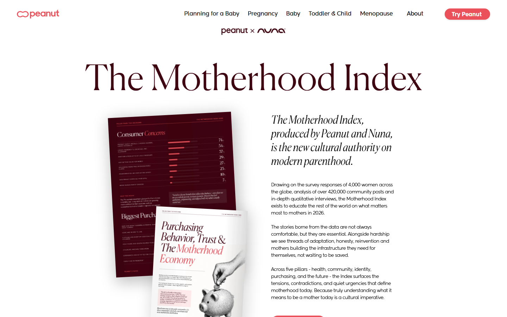
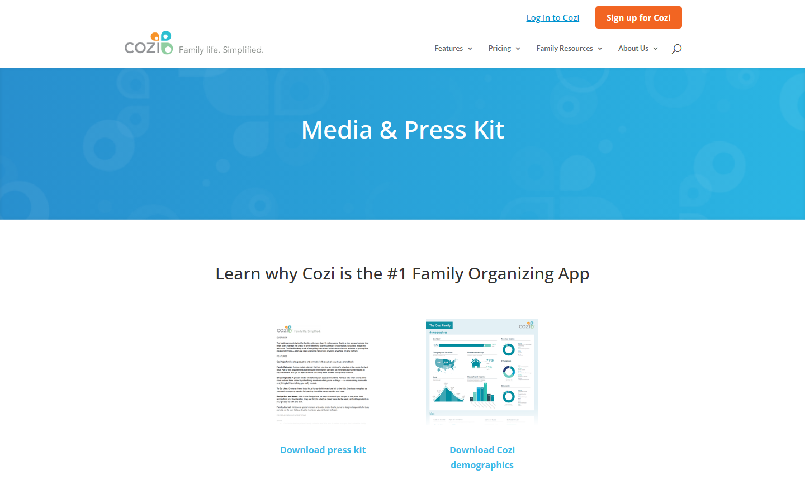
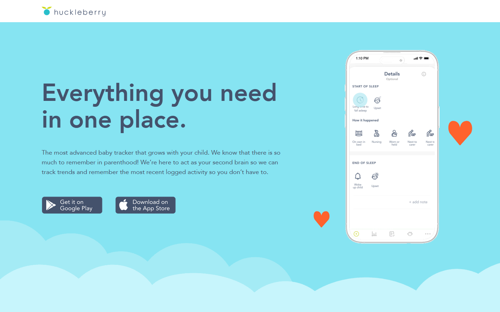
공식 화면·수치: WTE App Store, Peanut, Cozi, Huckleberry. 회사 자체 발표 수치임.
제작자는 새 플랫폼을 위해 다시 일하지 않는다. 원본을 더 오래 쓰고, 링크·예약·상품 전환을 높이는 최소 수고가 보여야 한다.
공동 브랜드 실행 페이지 · 원본·상품·예약 연결 유지 · 복잡한 편집 없는 제작 지원 · 집계된 실행·도움 통계.
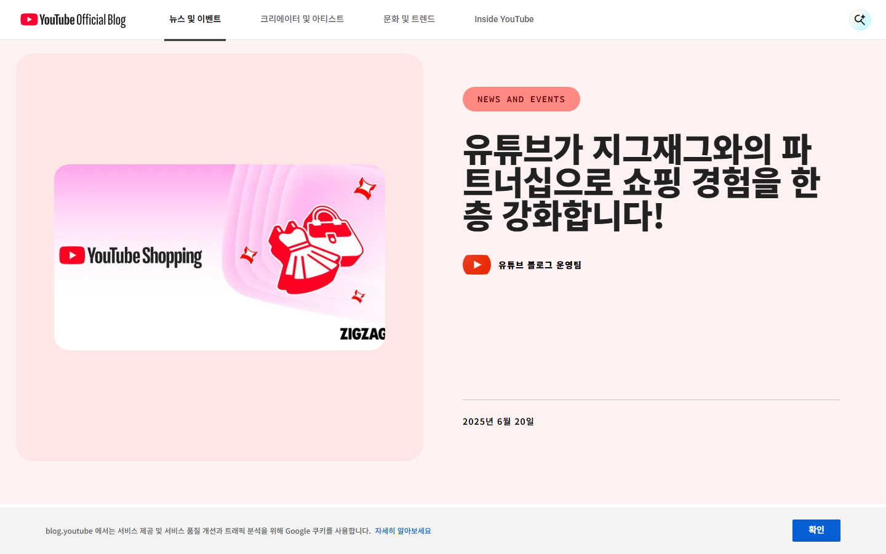
FlowMe 파일럿 자원 가설+23%는 YouTube 자체 실험이며 FlowMe 효과가 아니다. 사례비·운영 시간은 실제 견적이 아닌 자원 승인용 가설이고 권리 검토 비용은 별도다.
공식 근거: YouTube Shopping Korea 2025, YouTube Shopping 클릭 실험 2024. 한국 수치는 전체 카테고리이며 육아 제작자 규모로 해석하지 않는다.
참여는 글쓰기 도구만 열어준다고 생기지 않는다. 쉬운 첫 과제, 보이는 영향, 검토 권한, 원본과 수정본의 경계가 필요하다.
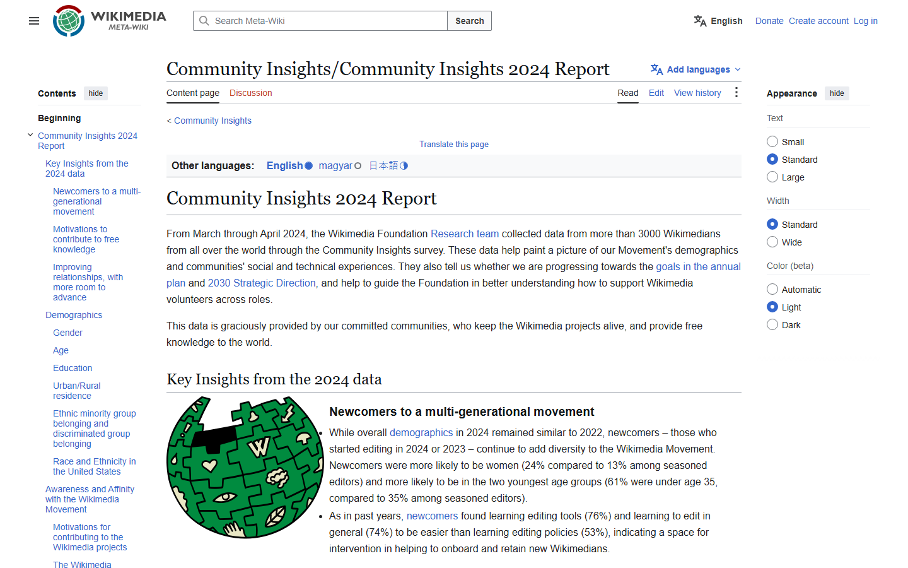
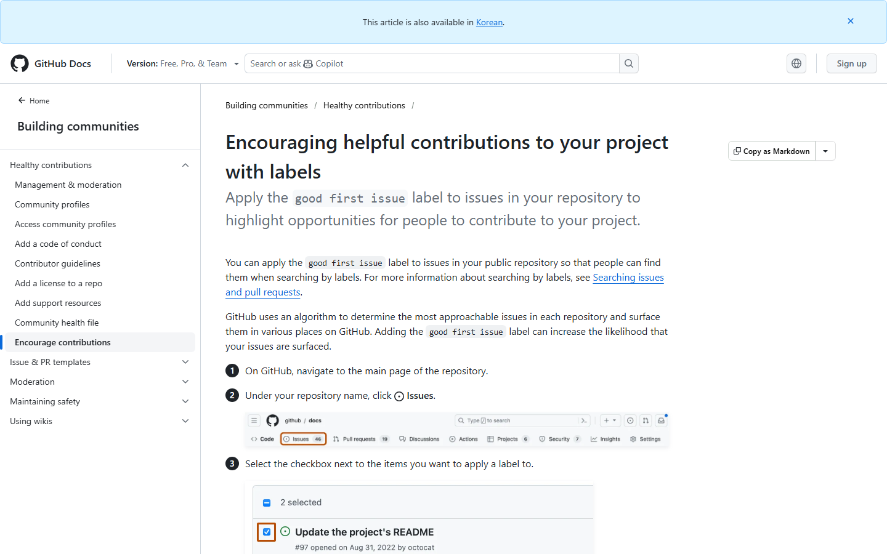
출처: Wikipedia 2024 Year in Review, Community Insights 2024, n>3,000, GitHub good first issue.
기존 개발을 버리는 것이 아니다. 획득 메시지와 투자 순서를 바꾼다.
URL 입력 · 출처 신뢰 · 내보내기 묶음 · 사용자 여정 정확성 · 공식/제작자 원본 수급
상황·선행조건·시간·비용·역할·분기·완료 · 제작자 승인 · 공동 양육자 공유
My Flow 전면화 · 제작자 직접 편집기 · 외부 계정 연결 · 거래 장터 · 자유 편집
검토 전 미리보기 확대 · 일반 AI 초안 공개 · 의료/발달 확장 · 가족 일정 도구 정면 경쟁
수치 가설 단계별 문턱은 예측이 아니라 다음 투자를 허용할 최소 판단선. 6주에는 첫 가치만 판단하고 반복 사용은 30일 후속 관찰로 분리한다. 현재 My Flow 실행 기능은 P1 자산으로 보존한다.
승인되면 다음 개발·콘텐츠 세션은 아래 경계 안에서 요구사항과 검증안을 구체화한다. 이 보고서는 실제 모집·실험을 수행하지 않았다.
상태 표시 원칙: 공식·원 연구 저장소 사실 전략 판단 가설·미측정. 근거가 없는 FlowMe 성과 수치는 사용하지 않았다.